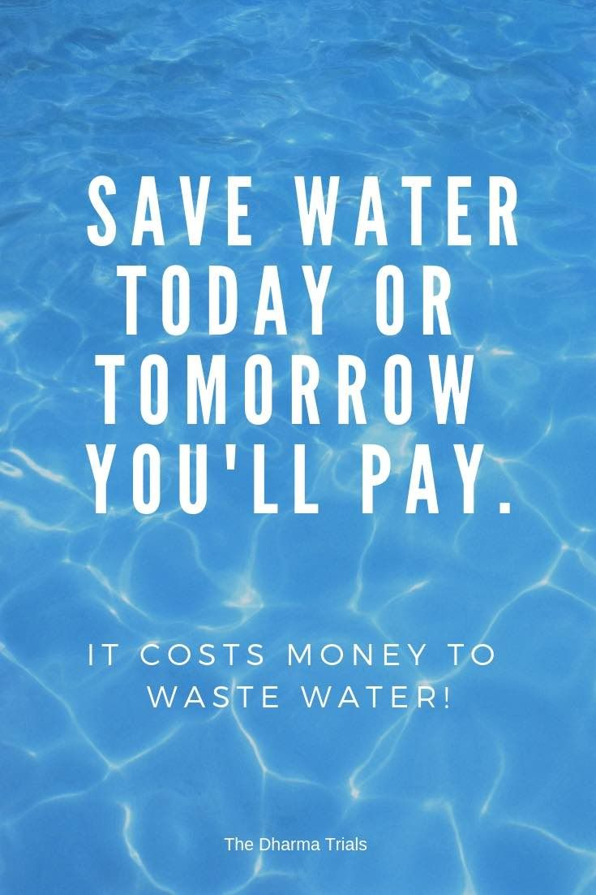
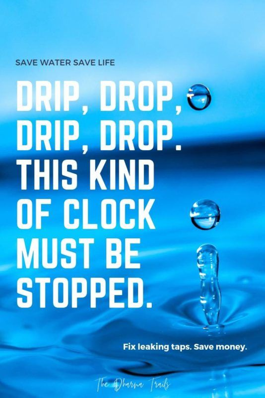
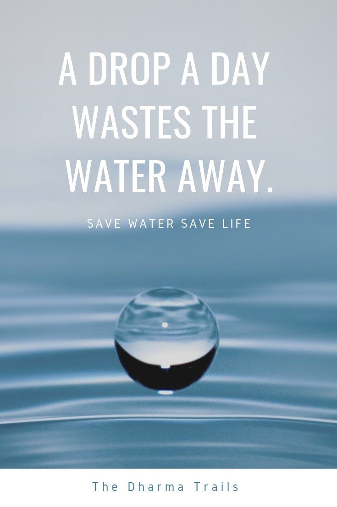
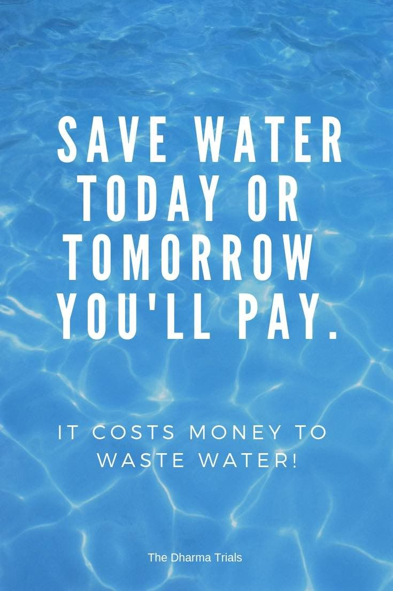
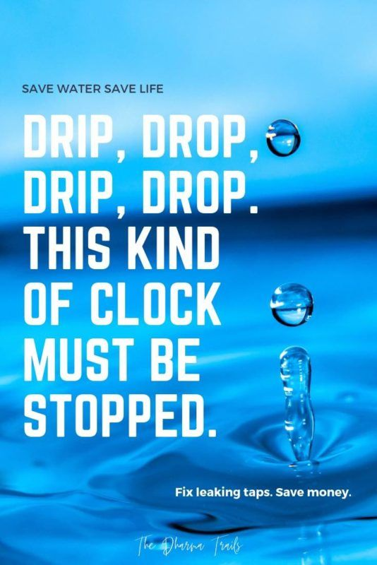
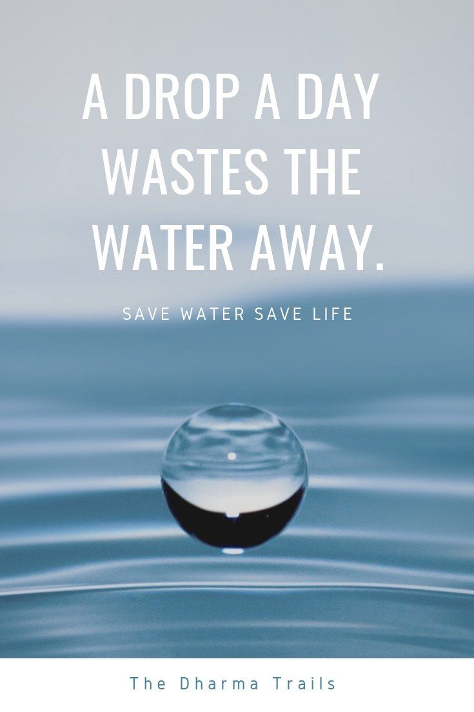

"The water footprint measures the total volume of freshwater used to produce a product or service"






How to Search:
Input Product Name:
Simply type in the name of the product you're curious about. For example, enter "rice" or "jeans" to get their water footprint.
Press 'Search':
Once you've entered your query, click on the 'Search' button or press 'Enter' on your keyboard.
Read Results:
The water footprint for your chosen product will appear below. If you can't find a product, it might not be in our current database, but we're always updating.